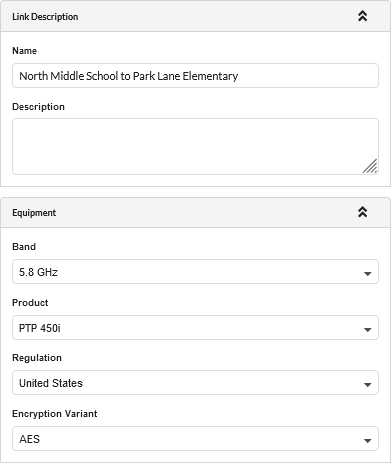

Creating Project, Sites and Link (Unlicensed Band)¶
To create a project with two sites and one link:
Click

A pop-up message is displayed asking for the project name and Prediction model to be used

Create new project window for PTP Tutorial¶
Enter Project name and Default settings for new links.
Enter the Project Name as Tutorial_PTP
Click

The project is now saved and the Project Page is displayed.
Click New Network Site
 on the right panel of the page.
on the right panel of the page.
The Network Site Mode page is displayed. Enter this data:
Site Name: North Middle School
Maximum Height: 25 meters
Enter coordinates?: Tick
Latitude: 39.74828N
Longitude: 104.84861W

Latitude and longitude should be separated by a comma. For example, 39.75093N, 104.84035W
Network Site Mode Window for PTP Tutorial¶
Click  , the new Network Site is created with a given site name.
, the new Network Site is created with a given site name.
Edit the Site Properties by following the steps below.
Click
which is left side of the
in the left panel of the page.
This shows Network Site tree view.
Network Sites Window for PTP Tutorial¶
Click North Middle School, enter the details below:
Description: Antenna mounted on school building
Click
Now the Network Site is updated with the new properties.
Network Sites window with properties for PTP Tutorial¶
To locate the Network Site on the map window, click in the right panel. This zooms to the level of the network device.
Repeat steps 3 and 4 to add the site for the other end of the link using this data:
Name: Park Lane Elementary
Maximum Height: 15 meters
Latitude: 39.75914N
Longitude: 104.83700W
Description: Antenna mounted in school yard
Inserting Site 2¶
Click the and select the sites in the map to link them or click PTP Links in the left hand tool bar. This displays the PTP Links table view page. Click
 from table view. This displays the Create PTP Links page. Select the two sites to be linked: North Middle School and Park Lane Elementary and click .
from table view. This displays the Create PTP Links page. Select the two sites to be linked: North Middle School and Park Lane Elementary and click .
Create PTP Links for Tutorial¶
Configure the link equipment, see Equipment (unlicensed bands):
Band: 5.8 GHz
Product: PTP 450i
Regulation: United States
Encryption Variant: AES
 Link Equipment for PTP Tutorial¶
Configure the Product information
Bandwidth: 40 MHz
Color Code: 0
Frame Period: 2.5 ms
Downlink Data: 50%
MIMO Rate Adapt: MIMO-A/B
Maximum Mod Mode: x8
Minimum Mod Mode: x1
Master: North Middle School
Product Configuration for PTP Tutorial¶
Click to update the antenna and power values